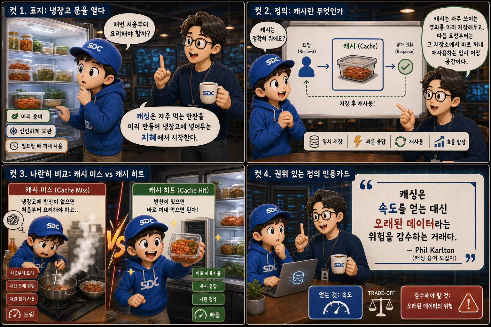
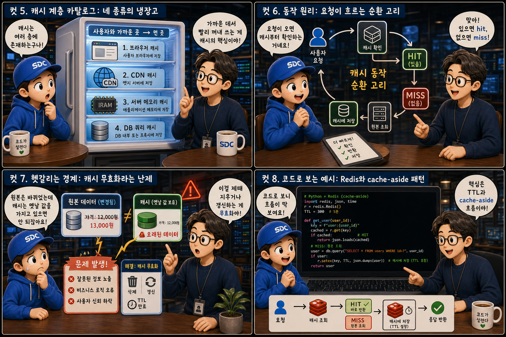
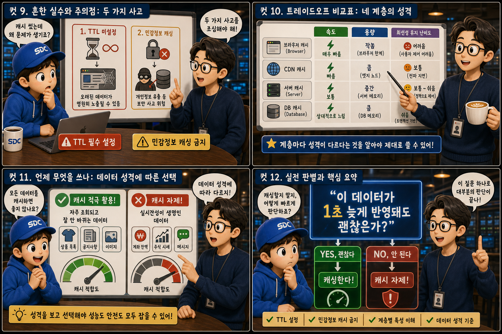

자주 먹는 반찬을 미리 만들어 냉장고에 넣어두듯, 캐시는 자주 쓰이는 결과를 미리 저장해 둡니다.
Cache HitvsCache Miss
웹 서비스는 같은 질문을 하루에도 수만 번 반복해서 받습니다. 그때마다 무거운 계산을 처음부터 다시 하면 응답은 느려지고 서버 자원은 낭비됩니다. 이 글에서는 그 낭비를 줄이는 전략 — 캐싱(caching) — 을 냉장고와 밑반찬 통이라는 하나의 비유로 끝까지 따라가 봅니다. 자주 먹는 반찬을 미리 만들어 냉장고에 넣어두면 다음 끼니 때 다시 요리할 필요가 없듯, 자주 요청되는 결과를 미리 저장해두면 서버도 매번 다시 계산할 필요가 없습니다. 문제는 그 냉장고를 얼마나, 어떻게, 언제까지 채워둘 것인가입니다.
PART 1 / 3 — 캐시란 무엇인가 (컷 01–04)

fourcut-01 — 컷 01 ~ 04
컷 01
매번 처음부터 요리해야 할까
매번 처음부터 요리해야 할까? 캐싱은 자주 먹는 반찬을 미리 만들어 냉장고에 넣어두는 지혜에서 시작한다.
활짝 열린 냉장고 안, 선반마다 투명한 밑반찬 통이 가지런히 줄지어 있습니다. 통마다 붙은 라벨은 신선한 초록빛으로 통일되어 있고, 앞치마를 입은 요리사가 그중 하나를 막 꺼내려 손을 뻗습니다. 냉장고 문 안쪽 저편으로는 김이 피어오르는 프라이팬과 도마가 흐릿하게 비치는데, 이는 ‘처음부터 다시 요리하기’라는 대안을 은근히 보여줍니다. 웹 서비스는 같은 요청을 셀 수 없이 반복해서 받는데, 그때마다 무거운 계산을 처음부터 다시 하면 느려지고 자원도 낭비됩니다. 캐싱은 자주 요청되는 결과를 미리 만들어 저장해두고, 다음에 같은 요청이 오면 다시 만들지 않고 꺼내주는 전략입니다.
컷 02
캐시란 무엇인가 — 미리 만들어 둔 결과
캐시는 자주 쓰이는 결과를 미리 저장해두고, 다음 요청부터는 그 저장소에서 바로 꺼내 재사용하는 임시 저장 공간이다.
냉장고 선반 하나를 가까이 들여다보면, ‘결과 1’, ‘결과 2’, ‘결과 3’ 라벨이 붙은 밀폐용기 세 개가 놓여 있습니다. 옆에 그려진 작은 시계 아이콘은 이 반찬들이 미리 만들어 둔 것임을 알려주고, 선반에서 뻗어 나온 화살표는 요리사의 손으로 이어지며 ‘재사용’을 표현합니다. cache, 즉 캐시는 계산 비용이 크거나 자주 조회되는 결과를 미리 만들어 저장해두는 공간입니다. 같은 요청이 다시 들어오면 원본 데이터를 다시 계산하거나 조회하는 대신, 저장해둔 결과를 그대로 재사용합니다. 요청 → 저장소 확인 → 재사용, 이 짧은 흐름만으로 응답 속도는 빨라지고 서버와 데이터베이스의 부담은 크게 줄어듭니다.
컷 03
캐시 미스와 캐시 히트, 냉장고 앞에서 갈리는 운명
냉장고에 반찬이 없으면 처음부터 요리해야 하고(캐시 미스, 느림), 반찬이 있으면 바로 꺼내 먹으면 된다(캐시 히트, 빠름).
화면을 정확히 반으로 가르는 분할선을 사이에 두고 두 장면이 대비됩니다. 왼쪽은 호박색 톤 — 빈 냉장고 선반 앞에서 땀 흘리며 재료를 손질하는 요리사, ‘캐시 미스(Cache Miss)’ 라벨과 길게 회전하는 시계 바늘. 오른쪽은 초록색 톤 — 가득 찬 선반에서 통 하나를 여유롭게 꺼내는 요리사, ‘캐시 히트(Cache Hit)’ 라벨과 짧게 멈춘 시계 바늘. 캐시에 원하는 결과가 없어서 원본 데이터를 다시 조회하거나 계산해야 하는 상황을 캐시 미스라 부르고, 캐시에 이미 결과가 저장되어 있어서 그대로 꺼내 쓰는 상황을 캐시 히트라 부릅니다. 좋은 캐싱 전략의 목표는 히트율(hit rate)을 최대한 높여, 느린 미스 경로를 타는 횟수를 줄이는 것입니다.
컷 04
한 문장으로 정리하면: 캐싱은 거래다
캐싱은 속도를 얻는 대신 오래된 데이터라는 위험을 감수하는 거래다.
SPEED — CACHE HIT
빠르게 응답하지만 오래된 값일 수 있다
FRESHNESS — CACHE MISS
항상 최신이지만 매번 다시 계산해야 한다
caching is a trade-off
원본 데이터가 바뀐 뒤에도 캐시는 한동안 예전 값을 그대로 들고 있을 수 있는데, 이를 신선도(freshness) 문제라고 부릅니다. 캐싱 전략을 설계한다는 것은 결국 얼마나 빠르게 응답할 것인가와 얼마나 최신 데이터를 보여줄 것인가 사이의 균형점을 찾는 일입니다.
PART 2 / 3 — 계층과 동작 원리 (컷 05–08)

fourcut-02 — 컷 05 ~ 08
컷 05
네 종류의 냉장고 — 캐시가 놓이는 자리
캐시는 사용자로부터 가까운 곳부터 먼 곳까지 여러 층에 존재한다. 브라우저, CDN, 서버 메모리, DB 쿼리 캐시가 그 네 가지다.
사용자 아이콘에서 뻗어 나온 점선 화살표를 따라 네 개의 타일이 늘어서 있습니다. 손바닥만 한 냉장고는 브라우저 캐시, 동네 편의점 냉장고는 CDN 캐시, 식당 주방의 대형 업소용 냉장고는 서버 메모리 캐시(Redis), 지하 창고의 산업용 냉동고는 DB 쿼리 캐시를 나타냅니다. 왼쪽 타일일수록 속도계 바늘이 ‘빠름’에 가깝게 표시되죠. 캐시는 한 곳에만 있지 않고 여러 층으로 존재합니다. 사용자 브라우저에 저장되는 브라우저 캐시, 전 세계에 분산된 CDN 캐시, 서버 애플리케이션이 메모리에서 쓰는 Redis 같은 캐시, 그리고 데이터베이스 자체의 쿼리 캐시까지 다양합니다. 사용자에게 가까운 층일수록 응답은 빠르지만 관리할 수 있는 범위는 좁아지고, 먼 층일수록 더 근본적인 부하를 줄여줍니다.
컷 06
요청이 흐르는 순환 고리
요청이 도착하면 먼저 캐시를 확인한다. 있으면 바로 반환하고(hit), 없으면 원본을 조회한 뒤 캐시에 저장한다(miss).
요청 도착→캐시 확인→Hit: 즉시 반환/Miss: 원본 조회→캐시에 저장→응답 반환
요청 하나가 손님처럼 문 앞에 도착하면, 냉장고 문을 여는 손이 먼저 캐시를 확인합니다. 통이 있으면(hit) 위쪽 갈래처럼 바로 꺼내 손님에게 서빙하고, 통이 없으면(miss) 아래쪽 갈래로 내려가 주방에서 원본을 조회하거나 계산한 뒤, 갓 만든 결과를 새 통에 담아 냉장고에 넣고 나서야 서빙합니다. 캐싱의 기본 동작은 이렇게 단순합니다. 있으면 즉시 반환하고, 없으면 원본을 조회해 캐시에 저장한 뒤 반환하는 이 패턴을 코드 근처에서 직접 처리한다고 해서 cache-aside 패턴이라 부르며, 실무에서 가장 널리 쓰이는 캐싱 방식입니다.
컷 07
헷갈리는 경계: 캐시 무효화라는 난제
원본 데이터가 바뀌었는데 캐시가 옛날 값을 그대로 들고 있으면 문제가 된다. 이를 제때 지우거나 갱신하는 일이 캐시 무효화다.
어제 만든 신선한 반찬을 냉장고에 넣어둔 장면과, 오늘 조리대 위 재료는 이미 바뀌었는데도 냉장고 속 통에는 여전히 어제 라벨이 붙어 있는 장면이 위아래로 대비됩니다. 통 뚜껑 위 호박색 느낌표는 상한 데이터(stale data)를 경고하고, 손님은 그 통을 꺼내 먹으려다 갸우뚱합니다. 캐싱에서 가장 어려운 문제 중 하나는 캐시 무효화(cache invalidation)입니다. 원본 데이터가 수정되었는데도 캐시에는 예전 값이 그대로 남아 있으면, 사용자는 이미 지나간 정보를 최신 정보인 것처럼 받게 됩니다. 데이터가 바뀔 때 캐시를 함께 지우거나(invalidate) 새 값으로 덮어쓰는 절차를 반드시 설계해야 합니다. cache invalidation?
컷 08
코드로 보는 예시: cache-aside 패턴
실제 코드에서는 캐시에 값을 저장할 때 만료 시간을 함께 지정하고, 조회 시 캐시부터 확인한 뒤 없으면 원본을 조회해 다시 채워 넣는다.
캐시 조회 — Hit이면 바로 반환
// 냉장고부터 먼저 확인한다const cached = await redis.get(key);
if (cached) return JSON.parse(cached); // 히트
캐시 저장 — Miss 이후 다시 채운다
// 없으면 원본을 조회해 새로 만든다const data = await db.query(...);
await redis.set(key, JSON.stringify(data), 'EX', 300); // TTL 300초
먼저 Redis 같은 캐시 저장소에서 키로 값을 조회합니다. 값이 있으면 바로 파싱해 반환합니다 — 냉장고에서 통을 꺼내는 것과 같은 히트 경로입니다. 값이 없으면 데이터베이스를 직접 조회한 뒤, 그 결과를 다시 캐시에 저장하면서 EX 300처럼 TTL(Time To Live, 만료 시간)을 함께 지정합니다 — 새로 만든 반찬을 유통기한 라벨과 함께 냉장고에 넣는 미스 이후의 절차입니다. TTL을 지정하면 일정 시간이 지난 뒤 캐시가 자동으로 만료되어, 데이터가 영원히 오래된 채로 남는 것을 막아줍니다.
PART 3 / 3 — 실전 감각과 요약 (컷 09–12)

fourcut-03 — 컷 09 ~ 12
컷 09
흔한 실수 두 가지: 유통기한 없는 통, 뒤섞인 도시락
TTL을 설정하지 않으면 영원히 오래된 데이터를 보여줄 수 있고, 개인정보를 공유 캐시에 저장하면 보안 사고로 이어질 수 있다.
⚠ 실수 1 — TTL 없음: 영원히 오래된 데이터
먼지가 쌓이고 곰팡이가 핀 채 냉장고 깊숙이 방치된 통, 뚜껑에는 ‘유통기한: 없음’이라는 낙서가 있습니다. TTL을 설정하지 않으면 캐시가 영원히 만료되지 않아 오래된 데이터를 계속 보여주는 문제가 생깁니다.
⚠ 실수 2 — 개인정보를 공유 캐시에 저장
손님 이름표가 붙은 개인 도시락통이 공용 선반에 아무렇게나 놓여, 다른 손님이 그 통을 열어보려 합니다. 사용자 개인정보나 인증이 필요한 데이터를 여러 사용자가 공유하는 캐시(CDN이나 공용 서버 캐시)에 그대로 저장하면, 다른 사용자가 그 데이터를 열람할 수 있는 심각한 보안 사고로 이어질 수 있습니다.
개인화된 데이터는 캐시 키에 사용자 식별자를 반드시 포함시키거나, 아예 공유 캐시에 저장하지 않아야 합니다.
컷 10
트레이드오프 비교표: 네 계층의 성격
브라우저, CDN, 서버, DB 캐시는 속도, 용량, 최신성 유지 난이도가 서로 다르다. 층마다 성격이 다르다는 것을 알아야 제대로 쓸 수 있다.
same idea, different personality per layer
캐시 계층
속도
용량
최신성 유지 난이도
브라우저 캐시
매우 빠름
작음
쉬움
CDN 캐시
빠름
중간
중간
서버 메모리 캐시 (Redis)
매우 빠름
중간
중간
DB 쿼리 캐시
보통
큼
어려움
브라우저 캐시는 매우 빠르지만 용량이 작고 서버가 직접 제어하기 어렵습니다. CDN 캐시는 지리적으로 분산되어 빠르지만 무효화에 약간의 지연이 있습니다. 서버 메모리 캐시(Redis 등)는 빠르고 세밀하게 제어할 수 있지만 서버 재시작 시 날아갈 수 있습니다. DB 쿼리 캐시는 가장 큰 데이터를 다룰 수 있지만 최신성을 유지하기가 가장 까다롭습니다. 그래서 실무에서는 이 네 층을 상황에 맞게 조합해서 씁니다.
컷 11
언제 무엇을 쓰나: 데이터 성격에 따른 선택
자주 조회되고 잘 안 바뀌는 데이터는 캐시를 적극 활용하고, 잔액처럼 실시간성이 생명인 데이터는 캐시를 자제해야 한다.
🥬 자주 조회, 잘 안 바뀜 → 캐시 적극 활용
블로그 글
상품 목록
설정 값
⏱ 실시간성이 생명 → 캐시 자제
계좌 잔액
실시간 재고
주문 · 결제 상태
모든 데이터를 캐싱해서는 안 됩니다. 자주 조회되지만 자주 바뀌지 않는 데이터, 예를 들어 블로그 글이나 상품 목록, 설정 값 같은 데이터는 캐시를 적극적으로 활용하기 좋습니다. 반면 계좌 잔액이나 실시간 재고, 결제 상태처럼 아주 짧은 지연도 사용자에게 큰 혼란이나 손실을 줄 수 있는 데이터는 캐시를 자제하거나, 아주 짧은 TTL만 허용해야 합니다.
컷 12
판별법과 핵심 요약: 1초 늦어도 괜찮은가
“이 데이터가 1초 늦게 반영돼도 괜찮은가?”라는 질문 하나로 캐싱 여부를 판단할 수 있다.
가장 간단한 판별법은 이것입니다. 이 데이터가 1초, 혹은 몇 분 늦게 반영돼도 괜찮다면 캐시해도 좋다는 뜻이고, 조금이라도 늦으면 안 된다면 캐시는 피하자는 뜻입니다. 결국 캐싱은 냉장고에 밑반찬을 채워두는 일과 같습니다. 무엇을 얼마나 미리 만들어둘지, 언제 새로 만들지를 잘 판단하는 것이 좋은 캐싱 전략의 전부입니다.
캐시 = 미리 만든 밑반찬히트는 빠르게, 미스는 원본 조회TTL로 유통기한을 정하라무효화를 반드시 설계하라개인정보는 공유 캐시에 넣지 말라실시간 데이터는 캐시를 자제하라
하나의 냉장고, 두 가지 선택
캐시는 자주 쓰이는 결과를 미리 저장해 응답을 빠르게 만들지만, 그 대가로 신선도를 관리해야 하는 책임을 함께 짊어집니다. 냉장고를 채울지 말지는 결국 ‘얼마나 늦어도 괜찮은가’라는 질문 하나에 달려 있습니다.